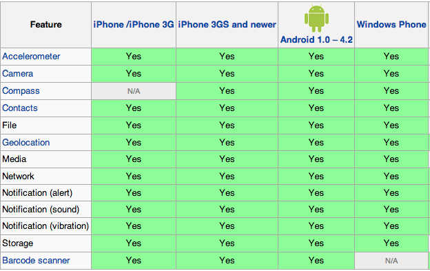

כתיבת אפליקציות ל iOS, Android, ו-Windows Phone בו זמנית בעזרת PhoneGap
נושאי היום
PhoneGap
PhoneGap Build
פיתוח לסביבת מובייל
Application Writing
ועוד נזכיר נושאים רבים כגון
HTML5 + CSS3 + Jquery, Node.js, Sockets.io, jQuery Mobile, Handlebars.js
רגע לפני שמתחילים קצת רקע
HTML 5

CSS 3
PhoneGap...
"PhoneGap, [is] a cross-platform framework for device-neutral mobile development"
מעטפת המאפשרת לקרוא לפונקציות פנימיות של המכשיר בעזרת Javascript
מאפשר לכם לכתוב אפלקציות "Native" לשלל פלטפורמות בו זמנית בעזרת CSS, HTML ו-JS בלבד
קוד פתוח המתוחזק באופן שוטף בעל קהילת מפתחים עצומה של (400,000+)
היסטוריה חשובה:
נוצר ע"י Nitobi בכנס "iPhoneDevCamp" בשנת 2009
נקנה ע"י Adobe בשנת 2011
Adobe תרמה את הקוד ל- "Apache Foundation".
Apache שינו את השם של הגרסה שלהם ל- “Apache Callback” ואז לאחר מכן לשמו הנוכחי “Cordova“
כמעט ואין הבדל בין הגרסאות למעט שירותים נוספים שמספקת Adobe החשוב מביניהם הוא שירות ה-Build
איך PhoneGap פועל:
האפליקציה הנוצרת היא למעשה עמוד אינטרנט על דף מלא ( full-screen web view )
למעשה אתם בוחרים איזה דף HTML להציג כדף הפתיחה.
מנוקדה זו ואילך למעשה ניתן להחשיב את האפליקציה כאפליקציית WEB רגילה לכל דבר ב- HTML/CSS/JS
כעת תצוגת ה- WEB מאזינה ומגיבה לקריאות Javascript בדיוק כמו בדפדפן
מתי כדאי להשתמש ב-PhoneGap?
כשאתם רוצים לכתוב את אותה אפליקציה לכמה מכשירים, ואינכם רוצים לתחזק 3 או 4 גרסאות קוד שונות*.
* חוץ מ-plugins
כשנוח לכם יותר עם HTML/CSS/JS מאשר עם Objective-C או Java
כשאתם רוצים שהאפליקציה שלכם תהיה נגישה מהאינטרנט או ממכשירים שונים
מתי לא כדאי להשתמש ב-PhoneGap?
כאשר האפליקציה עתירת ביצועיים או חייבת ביצועיים ברמת ה-"Native"
אם לא נוח לכם עם HTML/CSS/JS
אם אתם מתעניינים רק בסוג מסויים של מכשיר (אולי)
אז מה אתם יכולים לעשות עם PhoneGap בעזרת Javascript בלבד?
Use/track the accelerometer
Take pictures with the camera or pick from their photo gallery
Capture audio, images, or video
Get compass data
Get notifications about connectivity (online, offline, wifi vs 3G, etc)
Have access to contacts read and write
Get information about the device that is running your app (UUID, version, model, etc)
Receive events about when your app is started, resumed, closed, etc
Receive events about incoming calls, messages, battery events, volume changes, etc
Read from the file system
Get geolocation information
Work with globalization
Send notifications (sounds, vibrations, alerts, etc)
Read/write to WebSQL (or SQLite) databases
וכל דבר אחר העולה ברוחכם PhoneGap מאפשרת לכתוב Plugins יחסית בקלות
דברים שכדאי לזכור כשמפתחים ב-PhoneGap ולמובייל בכלל
כל הכתובות URLs למשאבים (css, js, fonts, images, etc) צריכות להיות רלטיביות.
כתובת אבסולוטית מתחילה מהתיקייה הבסיסית ביותר במערכת הקבצים (בדומה למערכות לינוקס) כלומר הכתובת foo/bar.jpg מצביעה ל- file://foo/bar.jpg ולא לקבצי האפליקציה
הסימולטור הוא רק סימולטור. בידקו הכל על המכשיר המיועד כמה שיותר מוקדם וכמה שיותר פעמים.

Debugging לרוב קשה הרבה יותר מדפדפן רגיל . וייתכן וישנן גרסאות רבות של מכשירים ודפדפנים שצריך להתאים אליהן
אם אתם רוצים לפתח ל-iPhone אתם עדיין זקוקים ל-Mac*
* כאן נכנס השירות הגאוני של PhoneGap Build
עדיין יש הבדלים קטנים בין הדפדפנים במכשירים השונים שמשפיעים על העיצוב ועל הקוד שתכתבו
כרגיל Microsoft עושים מה שבא להם מבחינת דפדפן ו-Windows Phone לא שונה. הוא בעל תמיכה משונה ומוגבלת ב- (HTML5 ו- CSS3)
אנימציות יכולות להיות מקוטעות אם לא תעשו אותן דרך המאיץ הגרפי GPU. ככלל אצבע אנימציות של JQuery לא עוברות דרך ה-GPU ואנימציות של CSS3 כן.
רק בגלל שנתקלתם בדבר מה שאינו עובד חלק ישר מהקופסא אין זה אומר שאתם צריכים להרים ידיים.
ככלל, עם קצת אופטימיזציות, תוכלו לגרום לאפליקציה להראות ולהתנהג בדיוק כמו שאתם רוצים ממש כמו אפליקציית "Native"
הרכיבים שניתן לעבוד מולם הם ברובם זהים במכשירים השונים

להתחיל זה קל
http://docs.phonegap.com מכיל את כל המידע הדרוש
וכעת נותר לנו ללכת להוריד את ה-SDKs שאנו רוצים לעבוד איתם (Android, iOS, Windows Phone, etc)
אבל אנחנו לא נעשה את כל זה אנחנו נעבוד עם PhoneGap Build
אז יאללה בואו נכתוב קצת קוד ?
שאלות?
https://www.linkedin.com/in/ttalgam
ttalgam@gmail.com
Also Check Out
Scott Cheng
CSS3 Slides and
html5rocks
For The HTML5 Slides and
Bryan Hales
Phonegap Presentation